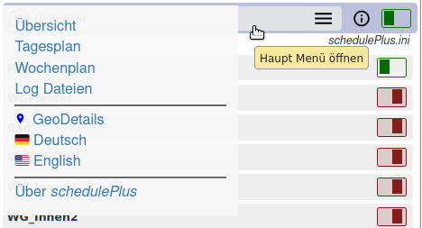
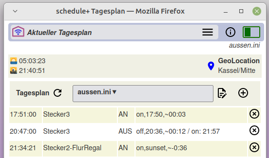
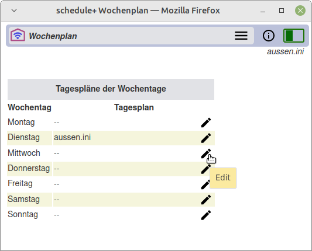
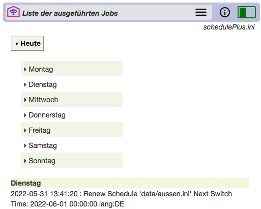

schedule+ Overview
schedule+ Overview
2022-06-24
Control lighting flexibly with WLAN/Tasmota
schedule+ enables central switching and setting of WLAN-capable devices via mobile end devices such as smartphones/tablets or also on PCs.
Switching times and dimming of lighting fixtures can be freely defined. Timings can be based on sunrise/sunset and can vary with random time periods. Such settings are also combined into daily and weekly schedules.
With such designed schedules activity in the house is simulated even in the absence.
The schedule+ functions are grouped on several WEB pages and provide settings, operation, schedule tracking or calling the documentation with an easy to use menu control.
schedule+ is aimed at users who want to use smartphones or PCs as a control center for switching and setting the home installation, and at the same time want to be able to change the settings easily - for example, the daily schedule.
Switching times and dimming of lighting fixtures can be freely defined. Timings can be based on sunrise/sunset and can vary with random time periods. Such settings are also combined into daily and weekly schedules.
With such designed schedules activity in the house is simulated even in the absence.
The schedule+ functions are grouped on several WEB pages and provide settings, operation, schedule tracking or calling the documentation with an easy to use menu control.
schedule+ is aimed at users who want to use smartphones or PCs as a control center for switching and setting the home installation, and at the same time want to be able to change the settings easily - for example, the daily schedule.
schedule+ runs as an application on a RaspberryPI (RPI).
Supported WLAN devices, installation and setup ▸ see here
schedule+ -- Start page / Devices in the WLAN
Fig.1 shows the start page of the app with the devices available in the WLAN with their names and their respective states. Switching devices are shown with a green=ON or red=OFF switch, dimmers with a slider. These elements are also used for
ON/OFF switching and for changing the dimming brightness, respectively.

Start Page - Fig.1
Explanations
- schedule+ Kopfzeile -- appears on all WEB pages and offers two functions: access to the main menu and the daily schedule switch
- Main Menu -- tap or mouse click to open the ▸ Main Menu
- Day Schedule Switch -- Temporary suspension of the active daily schedule with the time-controlled switching/dimming.
- Notes -- The line on the right shows which "Day Schedule" is loaded and active.
- Swichtes ON/OFF -- shows the current state, switching by tapping or MouseClick
- Dimming with slider -- the slider shows the brightness value, change by dragging the knob.
- Links to log files -- Calling various event logs .
- URL of the application -- see Installation/Setup .
schedule+ Main Menu
Die schedule+ app has a header on all pages, this is also a menu button to open the 'Main Menu'.
The opened menu provides access to the schedule+ functions, so it always goes back to the home page [overview] from here.

Abb.2 - Main Menu
The opened 'Main Menu' shows menu items for the main function areas in the first section:
▸ Overview, ▸ Day Schedule, ▸ Week Plan, ▸ Log Files, these are described below:
GeoDetails selects the application location with its GeoCoordinates. This is important to determine the daily times for sunrise and sunset.
🇩🇪 Deutsch und 🇺🇸 English set the language selection for the user interface and documentation language.
GeoDetails selects the application location with its GeoCoordinates. This is important to determine the daily times for sunrise and sunset.
🇩🇪 Deutsch und 🇺🇸 English set the language selection for the user interface and documentation language.
Day Schedule -- Work with time schedule
schedule+ provides a simple menu-driven concept for the definition of daily schedules consisting of a set of switching operations (named jobs).
Job Definition
With schedule+ the user defines at which time a device should be switched -- this is called a job.
The time definition of a 'job' is done with absolute time, relative to a previously defined time (e.g. to switch off a device after a certain time) or also relative to
Multiple actions for the same device can be defined as one job.
The time definition of a 'job' is done with absolute time, relative to a previously defined time (e.g. to switch off a device after a certain time) or also relative to
Sunrise / Sunset. All time specifications are variable with
random times.
Multiple actions for the same device can be defined as one job.
Day Schedule
A Day Schedule consists of a series of combined jobs. A Day Schedule definition refers to one daily schedule at a time and is saved under any name as a text file (with the extension '.ini') -- e.g. 'schedulePlus.ini
▼'.

Fig.3 - Day Schedule Example
The 'Current Day Schedule' shows in the rows of a table the jobs, i.e. the switching times of the devices with their scheduled functions (ON/OFF/SET/NEW).
Note -- When calling up the 'Current Day Schedule', only the jobs that are pending on this day are displayed.
With the icon on the right side of the line, the job can be deleted for execution.
Note -- The deletion is done only for the 'Current Day Schedule', the day plan (.ini) file will not be changed!
The header of the daily schedule table is used for further function calls:

- an example: 'aussen.ini ▼', it also serves as a selection menu for loading other daily schedules
- The daily schedule is updated with the pending jobs of the day
 Icon to start modifing the displayed daily schedule
Icon to start modifing the displayed daily schedule- Adding a job only to the active daily schedule, but not to the (.ini) file. Thus, this job is valid only for the current day; general changes to the day plan is done only with the Editor.
In the center, the display of the current daily schedule:
Links to update the daily schedule:
Right to edit the daily schedule:
Above the daily schedule table are the current sunrise and sunset times, which are calculated on a daily basis using the local GeoLocation. Using the GeoLocation
icon calls up a map on which the current GeoDetails can be checked and set if necessary.
Week Plan

The weekly schedule defines different daily schedules for each day of the week. If no daily schedule is defined for a weekday (or if it is not available), the schedule of the previous day will continue to be used. For example, different
schedules can be defined for the days for the days Monday to Friday and for the weekend.
Log Dateien

The Log file page loads a list of the jobs already executed on the current day [ ▸ Today].
The activities of the other days of the week can also be retrieved. These lists are written continuously every day in a weekly rhythm.
All completed job executions and further details can be called up via the "Overview" page (see above).